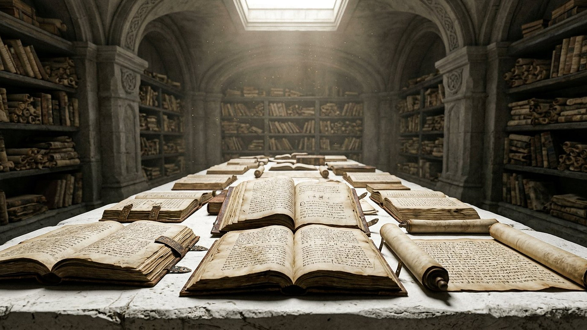
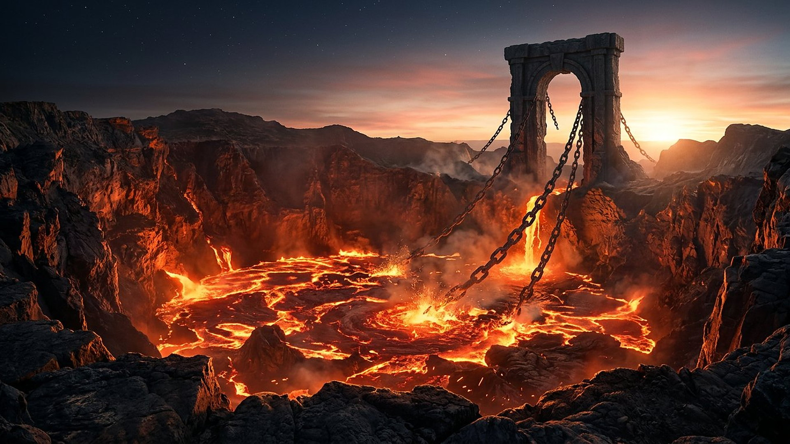

Salle 33 — Révélation 20 À VENIR
Le grand trône blanc : quand les livres s’ouvrent
« Et les morts furent jugés selon leurs œuvres, d’après ce qui était écrit dans ces livres. » — Révélation 20:12 (d’après Segond 1910)
Reconstitution numérique — le trône est montré vide : le musée ne représente pas le Juge.
La dernière audience de l’histoire
La salle précédente s’arrêtait au terme des mille ans. Révélation 20:11-15 ouvre alors la scène finale : « un grand trône blanc », devant lequel « la terre et le ciel s’enfuirent ». Les morts — « les grands et les petits » — se tiennent debout. Des livres sont ouverts, puis un autre livre, « le livre de vie ». La mer, la mort et le séjour des morts rendent leurs morts. À la fin, la mort elle-même est jetée dans l’étang de feu.
Dans la lecture retenue par ce musée, cette audience n’est pas un procès expéditif fondé sur des rumeurs : elle manifeste une justice parfaitement informée, patiente et proportionnée. Les ressuscités ont reçu, pendant les mille ans, le temps d’apprendre et de choisir. Le jugement révèle donc ce que chacun a fait de la vie rendue. Il ne s’agit pas d’acheter la vie par une addition de bonnes actions, mais de répondre — ou de refuser de répondre — à la direction de Dieu lorsque la vérité est pleinement connue.

La scène en cinq plans
Avancez dans les versets 11 à 15. Les cinq plans suivent l’ordre du texte ; ils ne datent pas la scène.
Plan 1 / 5
Quatre clés pour ne pas mal lire la scène
Ce que la salle affirme, et ce qu’elle laisse débattu
LECTURE PROPHÉTIQUE
Une destruction définitive, pas un tourment conscient sans fin
Le texte définit l’étang de feu : « C’est la seconde mort » (20:14). Il y jette aussi la mort et le séjour des morts, qui ne sont ni des personnes ni des êtres capables de souffrir. La salle y lit donc le symbole d’une disparition irréversible : ce qui y entre cesse de nuire et d’exister comme puissance ou comme vie rebelle. La vie éternelle est le don réservé à ceux dont le nom demeure dans le livre de vie.
DÉBATTU
D’autres lectures du jugement final
Beaucoup de traditions comprennent l’étang de feu comme un état de séparation ou de tourment conscient et éternel, et situent le jugement général au retour du Christ plutôt qu’au terme d’un règne millénaire littéral. Elles lisent aussi « selon leurs œuvres » dans des rapports différents à la foi et à la grâce. Ces désaccords sont anciens et réels ; le musée expose sa lecture sans prétendre que le seul chapitre 20 règle chaque détail de la doctrine du salut.
DONNÉE HISTORIQUE
Daniel avait déjà vu des livres ouverts
Des siècles avant la Révélation, Daniel 7:9-10 décrivait un tribunal céleste : des trônes placés, un Juge vénérable assis, « et les livres furent ouverts ». Jean reprend cette image judiciaire familière aux lecteurs anciens. Le parallèle montre la continuité du langage prophétique ; il ne transforme ni Daniel ni Jean en reportage photographique.
Prescience n’est pas fatalité — même devant le trône
Le livre de vie n’est pas présenté comme un registre figé qui rendrait les choix illusoires. Dans l’ensemble du récit biblique, des noms peuvent être effacés ou maintenus selon la fidélité (Exode 32:32-33 ; Révélation 3:5). Dieu connaît la fin ; les humains, eux, écrivent leur réponse par leurs actes. Le jugement final ne supprime pas cette responsabilité : il la révèle.
La fin de la mort
Le dernier mouvement de la scène est le plus étonnant : après les morts, c’est la mort elle-même qui est jetée dans l’étang de feu, avec le séjour des morts vidé de ceux qu’il retenait. Le dernier ennemi ne reçoit donc pas une place éternelle dans l’univers renouvelé. Le chapitre suivant peut alors ouvrir sur la promesse : « Il essuiera toute larme de leurs yeux, et la mort ne sera plus » (Révélation 21:4).

Salle 32 : le règne de mille ans · Salle 15 : ce qui vient · Salle 17 : le verdict
Écouter la salle
Transcription de la narration
Bienvenue dans cette nouvelle salle du musée. Elle présente une image célèbre d’un ancien récit visionnaire : un grand trône blanc, des registres ouverts et un registre consacré à la vie. Vous avancerez en cinq étapes, grâce à un récit interactif, puis vous examinerez la vallée de Hinnom, près de Jérusalem, afin de distinguer un lieu réel des symboles employés par le texte. La visite compare également plusieurs lectures anciennes et modernes. Comme toujours, les documents vérifiables, les points débattus et les interprétations sont signalés par des étiquettes distinctes.